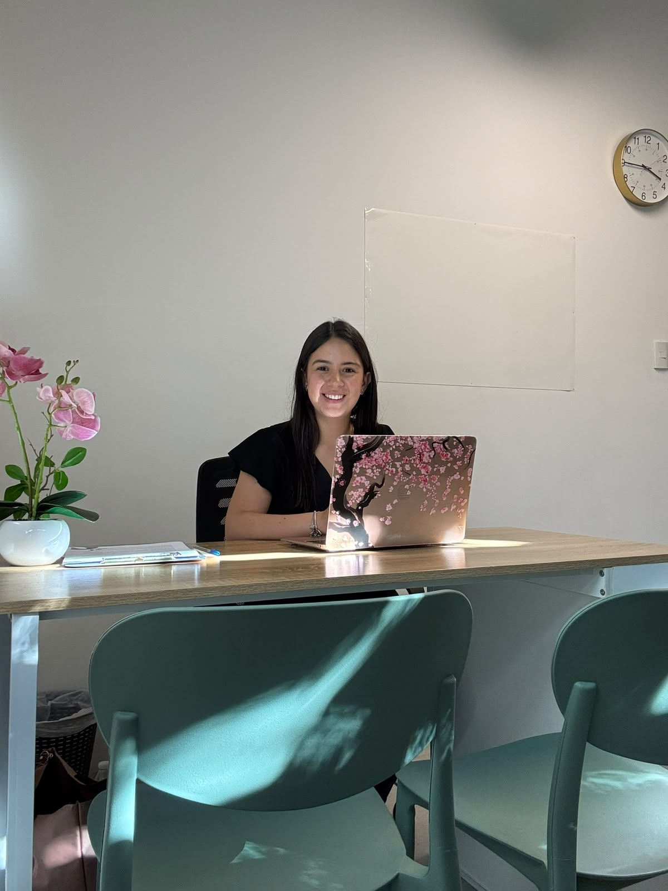
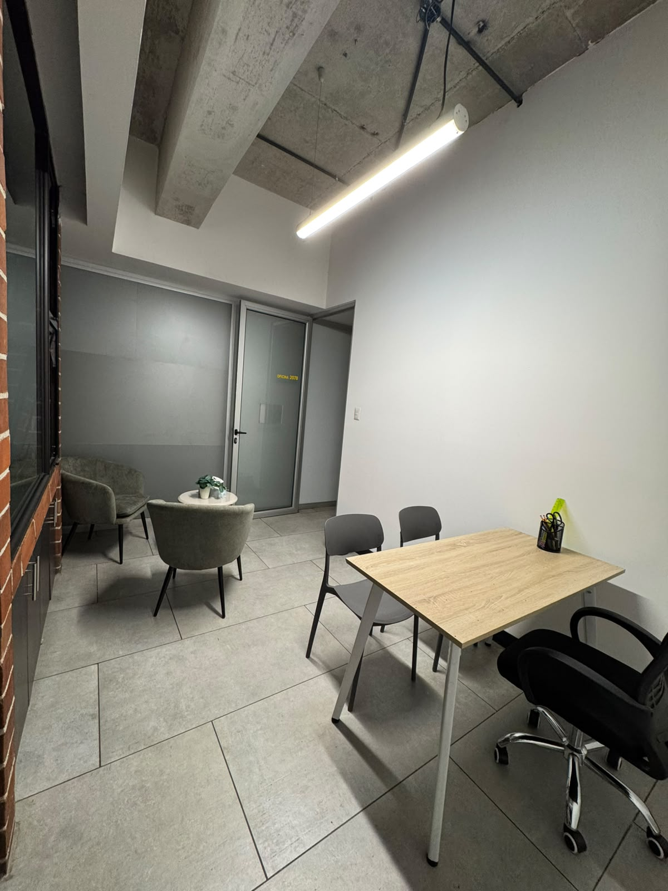
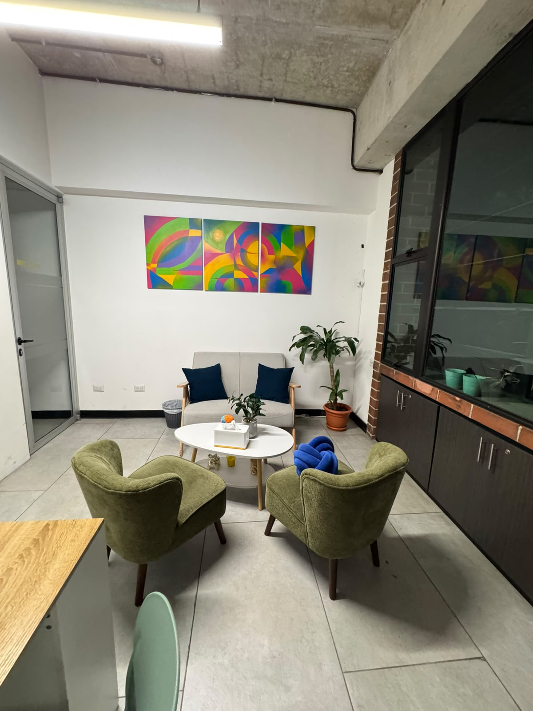
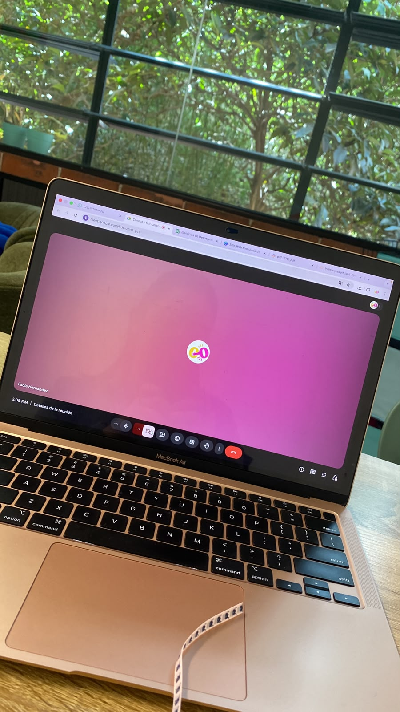
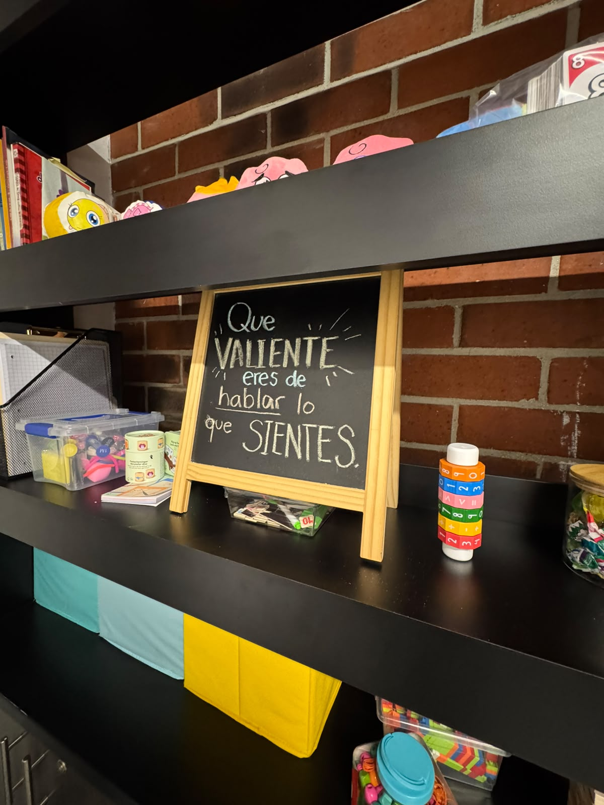
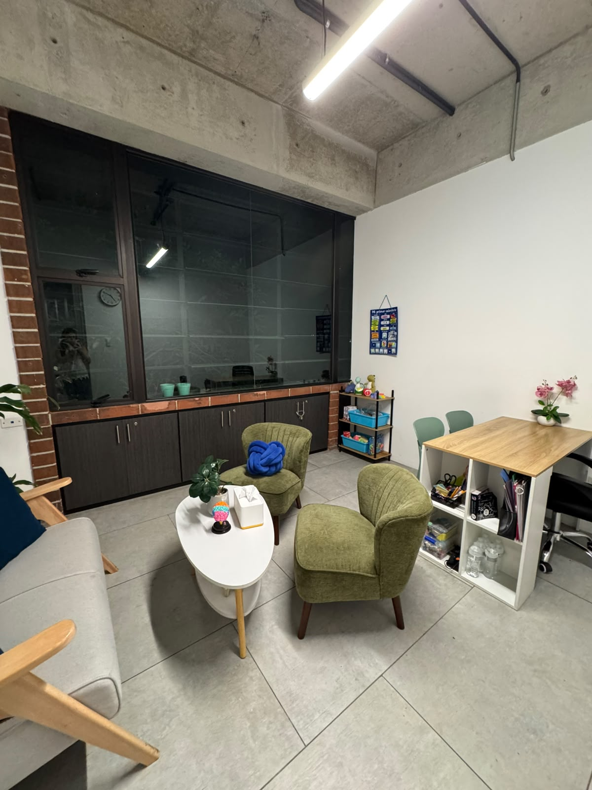
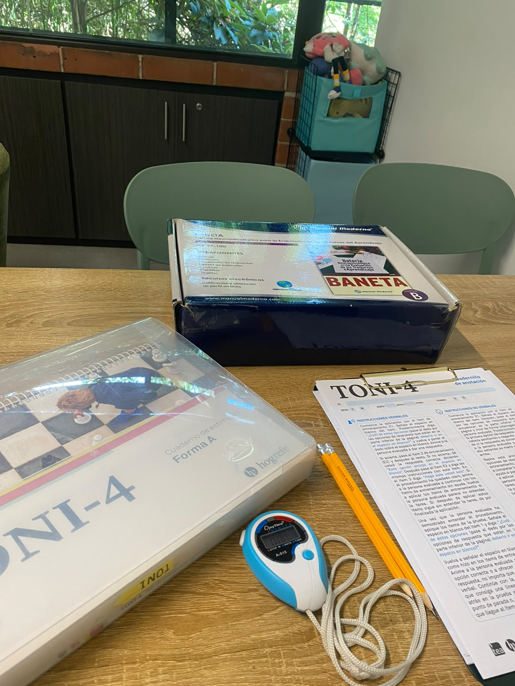
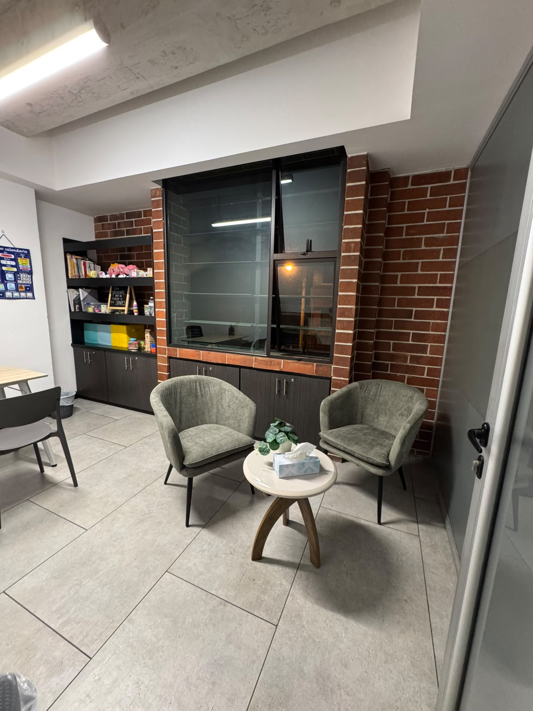
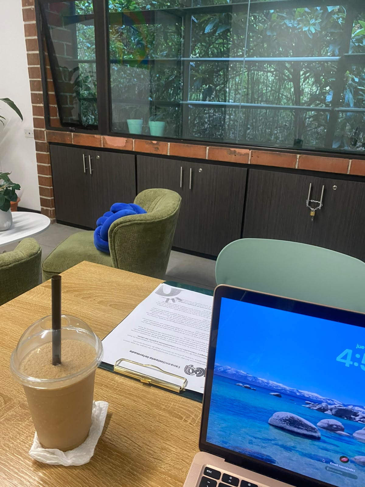

Comprender a cada niño para acompañarlo a crecer.
Evaluación e intervención neuropsicológica, psicología y tutorías académicas — para niños, adolescentes y jóvenes de 3 a 24 años, adaptadas a las fortalezas y necesidades de cada uno, y acompañando a su familia en el proceso.

¿Qué estás notando en tu hijo?

Todos los servicios
Cada proceso empieza por entender cómo piensa, siente y aprende tu hijo.
Evaluación neuropsicológica
Evaluación integral para conocer las fortalezas y dificultades cognitivas, emocionales y académicas de niños y adolescentes.
Intervención neuropsicológica
Fortalecimiento de atención, memoria, funciones ejecutivas y habilidades de aprendizaje mediante estrategias individualizadas.
Psicología infantil y adolescente
Acompañamiento emocional para desarrollar regulación emocional, autoestima, habilidades sociales y herramientas para afrontar diferentes situaciones.
Tutorías académicas
Apoyo personalizado para reforzar contenidos, mejorar estrategias de estudio y favorecer un aprendizaje más autónomo.
Orientación a padres
Estrategias y acompañamiento para comprender y responder de manera efectiva a las necesidades de sus hijos.
¿No sabes por dónde empezar?
Escríbeme y conversamos sobre lo que estás notando en tu hijo.
Escribir por WhatsApp
Atención presencialUn espacio tranquilo, pensado para ellos
Sesiones individuales en Kooa, en un espacio adaptado para niños, adolescentes y jóvenes. Ideal para evaluaciones, intervención neuropsicológica, psicoterapia y tutorías. Edificio Distrito Miraflores, zona 11, Ciudad de Guatemala.

Atención virtualEl mismo acompañamiento, desde casa
Sesiones en línea manteniendo un acompañamiento profesional e individualizado. Disponible para psicología, orientación a padres y algunas modalidades de tutoría e intervención.

Hola, soy Paola Hernández.
En Kooa brindo atención especializada en neuropsicología, psicología y acompañamiento académico para niños, adolescentes y jóvenes de 3 a 24 años. Mi objetivo es comprender de manera integral a cada uno, brindándole herramientas que favorezcan su desarrollo cognitivo, emocional, social y académico, y acompañando a sus familias durante este proceso.
Busco que cada niño, adolescente y joven encuentre en Kooa un espacio seguro para comprender sus fortalezas y dificultades, desarrollar nuevas habilidades y desenvolverse con mayor autonomía y bienestar.
Licenciada en Psicología, con Maestría en Neuropsicología Aplicada y posgrados en Evaluación e Intervención Neuropsicológica. Colegiado activo No. 16467. Cuento con 7 años de experiencia en intervención de trastornos del neurodesarrollo y 4 años atendiendo en Kooa, en Distrito Miraflores.
Conoce el espacio




Lo que más me preguntan los papás
¿Qué es una evaluación neuropsicológica?
Es un proceso para conocer cómo piensa, aprende y se relaciona tu hijo. A través de entrevistas, pruebas estandarizadas y actividades, se evalúan áreas como atención, memoria, lenguaje, funciones ejecutivas, aprendizaje y aspectos emocionales. Al final recibes un informe con sus fortalezas, sus dificultades y recomendaciones concretas para casa y el colegio.
¿Cómo sé si mi hijo necesita una evaluación neuropsicológica?
Puede ser útil si notas que le cuesta concentrarse o recordar lo que aprende, si su rendimiento no refleja su esfuerzo, si recibes quejas constantes del colegio, si presenta problemas de conducta o si un docente o pediatra te lo ha sugerido. Si no estás seguro, escríbeme y lo conversamos antes de decidir.
¿A partir de qué edad atienden?
Atiendo niños, adolescentes y jóvenes desde los 3 hasta los 24 años. La orientación a padres está disponible para familias con hijos dentro de ese rango de edad.
¿Cuánto dura una evaluación neuropsicológica?
Varía según el motivo de consulta. Generalmente se realiza en 3 a 5 sesiones de 1 hora, más una entrevista inicial con los papás y una sesión de devolución de resultados. El informe escrito se entrega entre 10 y 15 días después de terminar la evaluación.
¿Qué diferencia hay entre evaluación e intervención neuropsicológica?
La evaluación sirve para entender qué está pasando: identifica fortalezas y dificultades. La intervención es el trabajo posterior, en sesiones periódicas, para fortalecer las habilidades que lo necesitan (atención, memoria, organización, estrategias de aprendizaje).
¿Cuál es la diferencia entre psicología y neuropsicología?
La psicología infantil se enfoca en lo emocional y conductual: cómo se siente tu hijo, cómo maneja sus emociones y cómo se relaciona. La neuropsicología se enfoca en los procesos cognitivos, emocionales y de aprendizaje. Muchas veces ambas se complementan, y en Kooa podemos trabajarlas de forma integrada.
¿Las tutorías son lo mismo que clases de refuerzo?
No exactamente. Además de reforzar contenidos, las tutorías en Kooa trabajan estrategias de estudio y organización para que tu hijo aprenda de forma más autónoma, tomando en cuenta cómo aprende.
¿Atienden de forma virtual?
Sí. La psicología infantil y adolescente y la orientación a padres están disponibles en línea, al igual que algunas modalidades de tutoría e intervención. La evaluación neuropsicológica es presencial.
¿Dónde están ubicados?
En el Edificio Distrito Miraflores, zona 11, Ciudad de Guatemala. El edificio cuenta con parqueo. Atendemos de lunes a sábado, de 8:00 a 19:00.
¿Qué pasa en la primera cita?
La primera cita es una conversación con los papás, sin el niño, para entender qué están notando, conocer la historia de su hijo y definir juntos cuál es el mejor camino: evaluación, intervención, terapia, tutorías u orientación.
¿Trabajan con el colegio?
Sí. El colegio es un espacio fundamental en el desarrollo de niños y adolescentes, por eso es importante alinear estrategias e información. Según lo requiera cada caso, envío informes o encuestas, visito los centros educativos o realizo reuniones virtuales o presenciales, siempre con la autorización de la familia.
¿Cuánto cuesta y cómo agendo?
Los costos dependen del servicio. Escríbeme por WhatsApp al +502 3026 6860 o a kooa.contacto@gmail.com y te comparto la información y los horarios disponibles. No trabajo directamente con seguros médicos, pero sí emito factura.
¿Qué pruebas se aplican en una evaluación neuropsicológica en Kooa?
Depende de cada caso: según el motivo de consulta se definen las áreas a evaluar y los instrumentos a utilizar. Entre las pruebas que se aplican en Kooa están:
- TONI-4: Inteligencia no verbal y razonamiento abstracto
- ENI-2: Procesos neuropsicológicos, aprendizaje, atención, memoria y funciones ejecutivas
- NEUROPSI Atención y Memoria: Atención, concentración y memoria
- BANFE: Funciones ejecutivas y control cognitivo
- BANETA: Procesos de aprendizaje, lectura, escritura y matemáticas
- SENA Padres: Emociones, conducta y adaptación desde la perspectiva de los padres
- SENA Escuela: Funcionamiento emocional y conductual en el contexto escolar
- SENA Autoinforme: Estado emocional, conducta y relaciones desde la perspectiva del niño o adolescente
- BRIEF-2 Padres: Funciones ejecutivas en la vida cotidiana
- BRIEF-2 Escuela: Funciones ejecutivas en el contexto escolar
- PAI Adultos: Personalidad y características psicopatológicas en adultos
- EXPLORA: Dificultades y necesidades relacionadas con el aprendizaje
- ABAS-II Padres: Habilidades adaptativas en la vida cotidiana
- ABAS-II Escuela: Habilidades adaptativas en el contexto escolar
- PEABODY: Vocabulario receptivo y comprensión verbal
- BOSTON: Denominación y acceso al lenguaje
- BEERY-BUKTENICA: Integración visomotora y habilidades visuales
- WISC-IV: Capacidad intelectual y procesos cognitivos en niños y adolescentes
- ADI-R: Características del espectro autista mediante entrevista a cuidadores
- E-TDAH: Síntomas de atención, hiperactividad e impulsividad
- BRIEF-P: Funciones ejecutivas en niños pequeños
- RIAS-2: Inteligencia general, verbal, no verbal y memoria
- ATENTO: Atención y control atencional